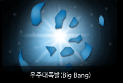
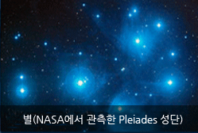
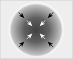
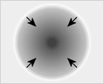
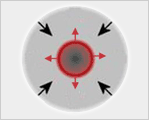
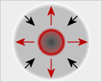
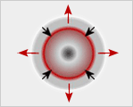
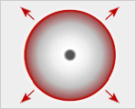
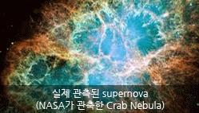

생성원리

- 
- 
우주대폭발(Big Bang)
빅뱅은 방정식의 성립을 위한 간접적 접근으로 제시된 이론에 불과하지만 현대에 가장 인정 받고 있는 우주탄생 이론입니다.
초기 우주는 빅뱅에 의해 시간이 시작되고 공간이 만들어졌습니다. 엄청난 폭발 후 생성된 최초물질(수소)들이 빅뱅에 의한 파동에 의해 불규칙적으로 움직이게 되고 서로 부딪쳐 뭉치기 시작합니다.
이렇게 생성된 수소 구름덩어리가 소용돌이치면서 회전하게 되고 만유인력에 의해 뭉쳐져 더욱 빠르게 주위 수소구름들을 끌어당겨 거대한 수소덩어리를 형성하게 됩니다.
별(NASA에서 관측한 Pleiades 성단)
점점 커지는 수소덩어리는 질량증가에 의해 중력수축력이 커지는 동시에 열과 압력이 상승하게 되어 핵융합반응도 발생하게 됩니다.
이러한 핵융합반응은 열과 팽창을 더욱 촉진시켜 수소덩어리의 수축이 정지되는 안정된 상태를 만드는데, 이를 유체 역학적 평형상태라 합니다.
이 때 수소덩어리는 엄청난 밝기의 빛과 에너지를 방출하면서 밝게 빛나는 별(1세대)로 탄생되는데 이를 항성이라 하기도 합니다.
- 
질량증가에 따른 수축력 증가
- 
부피수축
- 
핵융합반응에 따른 팽창 시작
- 
유체역학적 평형상태
유체역학적 평형상태에 이르는 데에는 질량증가, 수축력 증가, 열과 압력 상승, 팽창력 증가, 평형상태(수축정지)의 단계를 거치는데 이해하기 쉽도록 그림으로 간략히 나타내 보았습니다.
- 
팽창력의 지속적 증가
- 
초신성폭발(supernova)
- 
이렇게 생성된 별은 주계열 단계로 들어가 계속적인 핵융합반응에 의해 빛을 발하게 되는데, 이 과정에서 무거운 원소들이 단계적으로 생성되어 점점 핵으로 모이게 됩니다. 그 후 핵반응의 원료(수소, 헬륨,…철)들을 다 소진하고 나면, 질량이 상대적으로 작은 별은 폭발적 팽창에 의한 적색왜성을 거쳐 백색왜성으로, 질량이 큰 별은 초신성 폭발에 의해 중성자별이나 블랙홀이 되어 기나긴 생을 마감하게 됩니다. 별의 소멸에 의해 흩어진 이러한 물질들은 다시 새로운 별 생성의 재료로 돌아가게 되고, 일부는 우주공간을 떠도는 신세가 되어 버립니다.